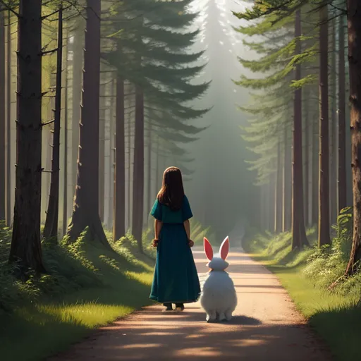

Bem-vindo ao nosso cantinho mágico! Neste mundo encantado tem um livro virtual especialmente para
você. Aqui as histórias e aventuras ganham vida. Claudio Marques Programador
Agatha acordou e pulou da cama, animada para começar sua aventura daquele dia. Ela colocou sua
mochila e partiu para as ruas da cidade.
O primeiro animal que Agatha encontrou foi um pequeno gato malhado, assustado e tremendo. Agatha se
aproximou com cuidado para não assustá-lo ainda mais.
Com paciência, Agatha conseguiu acalmar Malhado, e ele se aninhou em seus braços. Agatha sabia que
precisava levá-lo de volta ao parque próximo de sua casa.
Agatha e Malhado chegaram ao parque, onde ela o colocou suavemente em uma árvore, a casa tradicional
dos gatos de rua em seu bairro.
Depois de garantir que Malhado estava seguro, Agatha retomou sua busca. Em pouco tempo, ela
encontrou um filhote de cachorro perdido, tremendo no frio.
O filhote se aninhou em Agatha, que o enrolou em sua jaqueta para aquecê-lo. Ela o levou para uma
casa próxima, sabendo que o dono do filhote morava lá.
Com o filhote de volta à sua casa, Agatha continuou sua jornada. Ela se deparou com um pássaro
aterrorizado, preso em uma arapuca.
Muito cuidadosamente, Agatha liberou o pássaro da armadilha. Ela então levantou suas mãos para o
céu, permitindo que o pássaro voasse de volta para sua casa.
Agatha passou o resto do dia ajudando outros animais que encontrou. Ela encontrou uma tartaruga
presa em um dreno e a libertou.
Ao cair da noite, Agatha finalmente retornou para casa, cansada mas satisfeita. Ela sabia que havia
feito um trabalho importante naquele dia.
No dia seguinte, Agatha saiu novamente, determinada a ajudar mais animais. Ela encontrou um esquilo
assustado preso em uma placa de sinalização.
Com o auxílio de um adulto, Agatha conseguiu resgatar o esquilo e levá-lo de volta ao parque, onde
ele poderia se reunir com sua família.

Ela estava pronta para voltar para casa quando encontrou um coelho perdido. Agatha pegou o coelho e
o levou de volta para a mata ao lado de seu bairro.
Dia após dia, Agatha saía em sua jornada para ajudar os animais em necessidade. Ela conseguiu ajudar
muitos animais a retornar ao seu habitat natural.
A cada animal que ela salvava, Agatha se sentia mais e mais feliz. Ela sabia que estava fazendo a
coisa certa. E isso a fez se sentir bem consigo mesma.
E assim, a pequena Agatha continuava sua grande aventura. Ela se tornou uma pequena heroína para
todos os animais que encontrava e ajudava.
Com o passar do tempo, Agatha se familiarizou com todos os cantos e recantos de seu bairro. Ela
conhecia todos os lugares onde os animais costumavam se esconder ou se perder.
Fosse um patinho desgarrado de sua mãe, um cachorrinho perdido ou uma borboleta presa em uma teia de
aranha, Agatha estava sempre pronta para ajudar.
Essa era a vida de Agatha, repleta de pequenas aventuras. E mesmo que fosse cansativo, ela não
trocaria sua adorável aventura por nada neste mundo.
Todos no bairro conheciam Agatha e sua missão. Eles a respeitavam por seu amor e dedicação aos
animais. Eles sempre a ajudavam quando ela precisava.
Ao final do dia, Agatha sempre voltava para casa com uma sensação de alegria e realização. E estava
pronta para fazer tudo de novo no dia seguinte.
Agatha era realmente uma menina muito especial. Com seu amor e cuidado, ela realmente fez a
diferença na vida de muitos animais.
E mesmo que algumas pessoas possam pensar que ela era apenas uma menina, Agatha sabia que era uma
verdadeira heroína para os animais que ela salvava.
Mas Agatha não se importava com o que as outras pessoas pensavam. Ela estava feliz em fazer o que
ama e ajudar os animais. E isso era tudo que importava para ela.
E essa é a história de Agatha e sua maravilhosa aventura animal. Uma menina pequena com um coração
grande e uma missão ainda maior.